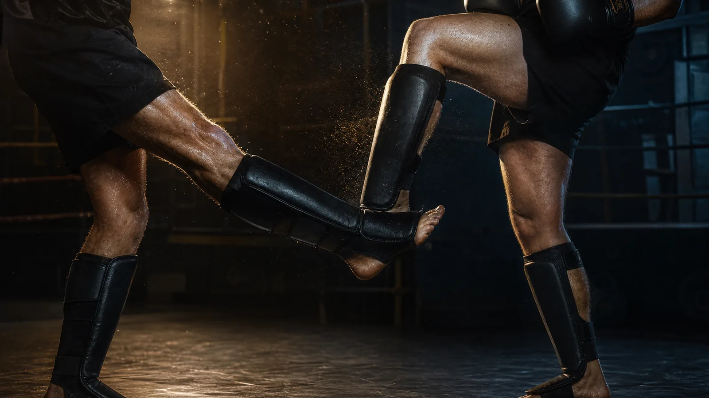
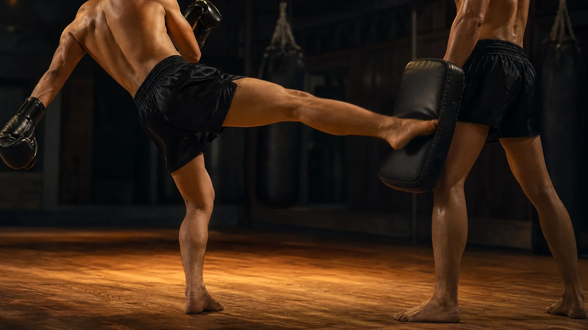

Ein Low Kick sieht unscheinbar aus. Kein Sprung, keine Drehung, kein Tritt zum Kopf. Trotzdem wird in Kickbox- und Muay-Thai-Hallen ständig über ihn geredet. Meistens am Tag danach, wenn der Oberschenkel blau ist und die Treppe steiler wirkt als sonst.
Dieser Artikel ergänzt unseren Beitrag zum Roundhouse-Kick. Dort geht es um die Grundbewegung des Rundtritts und einen Vierwochenplan für Anfänger. Hier geht es um die tiefe Variante: wohin du am Bein zielst, wie du den Tritt Schritt für Schritt aufbaust, was der Calf Kick anders macht, wie du dich schützt und wo der Low Kick nach den Regeln der Verbände überhaupt erlaubt ist. Dazu kommt, was Studien über Wirkung und Verletzungen sagen und wo sie schweigen.
Wichtig vorweg: Low Kicks gegen einen Partner gehören in eine Halle, mit Schienbeinschonern, abgesprochener Härte und einem Trainer, der zuschaut. Dieser Artikel erklärt Technik, Regeln und Studienlage. Er ersetzt kein angeleitetes Training und keine ärztliche Abklärung, wenn nach einem Treffer etwas nicht stimmt.
Was ist ein Low Kick?
Ein Low Kick ist ein Rundtritt gegen das Bein des Gegners, getroffen wird mit dem Schienbein. Er läuft auf derselben Bogenbahn wie der Roundhouse-Kick von außen nach innen, nur tiefer: zur Außen- oder Innenseite des Oberschenkels oder, als Calf Kick, gegen die Wade unterhalb des Knies. Sein Ziel ist selten der schnelle K. o., sondern ein Bein, das mit jedem Treffer weniger trägt.
Im Kickboxen hat das Wort zwei Bedeutungen. Es bezeichnet die Technik und eine Wettkampfdisziplin. Der internationale Kickbox-Verband WAKO führt „Low Kick“ als eine von drei Ringdisziplinen neben Full Contact und K1 Style. WAKO Deutschland beschreibt sie als Full Contact mit der zusätzlichen Möglichkeit, die Oberschenkel des Gegners innen und außen mit dem Schienbein zu treffen.
Welche Ziele gibt es am Bein?
- Oberschenkel außen. Der klassische Low Kick, meist mit dem hinteren Bein gegen das vordere Bein des Gegners. Getroffen wird die Außenseite zwischen Hüfte und Knie, wo der äußere Teil des vierköpfigen Oberschenkelmuskels liegt.
- Oberschenkel innen. Der Innen-Low-Kick trifft die Innenseite, wo die Adduktoren sitzen, also die Muskeln, die das Bein zur Mitte ziehen. Er kommt oft mit dem vorderen Bein, wenn der Gegner breit steht oder nach vorn drängt.
- Wade, der Calf Kick. Der Tritt landet unterhalb des Knies an der Außen- oder Rückseite des Unterschenkels. Er ist kurz, schwer zu checken und nicht in jedem Regelwerk erlaubt.
- Rückseite des Oberschenkels. Die WAKO-Regeln für Low Kick und Kick Light lassen auch sie als Trefferfläche zu. Im Kampf sieht man solche Treffer selten.
Was unterscheidet den Low Kick vom Roundhouse-Kick?
Die Mechanik ist dieselbe, die Höhe nicht, und das ändert einiges. Beim Low Kick ist das Ziel nah und tief. Der Tritt braucht weniger Beweglichkeit in der Hüfte als ein Kick zum Körper oder Kopf, ist schneller wieder unten und lässt sich leichter in Schlagkombinationen einbauen. Dafür ist er leichter zu checken: Das Bein, das du treffen willst, ist zugleich das Werkzeug, mit dem der Gegner abwehrt. Und ein Low Kick aus zu großer Distanz trifft nicht mit dem Schienbein, sondern mit dem Fuß, oft genau auf Knie oder Schienbein des anderen.
Wie trittst du einen Low Kick? Technik Schritt für Schritt
Kurz gesagt: Standbein aufdrehen, Hüfte durchziehen, mit dem Schienbein treffen und sofort zurück in die Deckung. Die Kraft kommt aus dem Körper, nicht aus dem Bein. Eine Übersichtsarbeit zu Beintechniken im Kampfsport (Razm und Kollegen, 2026, 23 Studien aus Taekwondo, Karate, Muay Thai, Kickboxen und MMA) beschreibt dasselbe Muster: Die höchsten Aufprallkräfte entstehen mit aufgedrehtem Standbein und einer Bewegung, die sich von der Hüfte bis in den Unterschenkel fortsetzt.
Die Schritte beschreiben die Grundform: Low Kick mit dem hinteren Bein gegen die Außenseite des vorderen Oberschenkels, aus der Linksauslage. Wer in Rechtsauslage steht, macht alles spiegelverkehrt.
- Stand und Abstand. Steh in deiner normalen Kampfstellung, Hände oben, Kinn unten. Der Abstand muss so sein, dass dein Schienbein den Oberschenkel trifft. Stehst du zu weit weg, landen Spann oder Zehen, und die tun dir mehr weh als dem Gegner.
- Winkel öffnen. Setz den vorderen Fuß einen kleinen Schritt schräg nach außen und dreh die Fußspitze dabei mit. Das öffnet die Hüfte und gibt dem hinteren Bein den Platz, um durchzuschwingen.
- Standbein aufdrehen. Während das hintere Bein abhebt, drehst du auf dem Ballen des vorderen Fußes auf, bis die Ferse Richtung Gegner zeigt. Das Knie des Standbeins bleibt leicht gebeugt und dreht mit dem Fuß, nicht gegen ihn.
- Hüfte durchziehen. Die Hüfte dreht durch das Ziel, das Trittbein folgt locker und spannt erst kurz vor dem Treffer an. Stell dir vor, du schwingst einen Schläger durch das Bein, statt gegen eine Wand zu drücken.
- Mit dem Schienbein treffen. Getroffen wird mit dem Schienbein, nicht mit dem Spann und nicht mit dem Knie. Das Ziel liegt zwischen Hüfte und Knie, nie auf dem Gelenk selbst. Die Bahn verläuft waagerecht oder leicht von oben nach unten.
- Arm als Gegengewicht. Der Arm auf der Seite des Trittbeins schwingt nach unten und hinten und hält dich im Gleichgewicht. Wie weit, ist Stilfrage. Die andere Hand bleibt an der Schläfe, denn während du trittst, ist dein Kopf das nächste Ziel.
- Zurück in die Deckung. Nach dem Treffer kommt das Bein auf kurzem Weg zurück in die Kampfstellung, oder du setzt es bewusst vorn ab, wenn eine Kombination folgt. Hände sofort hoch. Wer nach dem Kick offen dasteht, lädt zum Konter ein.
Ein Wort zum Standbein: Die Übersicht von Razm und Kollegen beschreibt auch die Kehrseite des Aufdrehens. Dieselbe Drehung, die Kraft bringt, belastet das Knie des Standbeins stärker auf Verdrehung; die Autoren nennen Kreuzband und Meniskus als gefährdete Strukturen. Deshalb lohnt es sich, die Drehung langsam und auf dem Ballen zu üben, bevor Tempo dazukommt.
Welche Fehler sieht man am häufigsten?
Die meisten Fehler beim Low Kick haben mit Abstand und Standbein zu tun. Die Tabelle fasst zusammen, was in der Trainingspraxis immer wieder auftaucht.
Typische Fehler beim Low Kick und wie du sie korrigierst
| Fehler | Was passiert | Korrektur |
|---|---|---|
| Treffen mit Spann oder Fuß | Schmerz im Fuß, Risiko für Mittelfuß und Sprunggelenk | Einen halben Schritt näher, mit dem Schienbein durch das Ziel |
| Standbein bleibt stehen | Der Kick kommt nur aus dem Bein, wenig Wucht | Auf dem Ballen aufdrehen, Ferse zeigt zum Gegner |
| Oberkörper kippt weit nach hinten, Hände fallen | Kopf offen, Gleichgewicht weg | Hintere Hand an die Schläfe, Oberkörper über dem Standbein |
| Kick ohne Vorbereitung aus großer Distanz | Der Gegner sieht ihn kommen und checkt | Low Kick nach einer Schlagkombination oder aus einem Schritt |
| Ziel Knie statt Oberschenkel | Verletzungsgefahr, in mehreren Regelwerken verboten | Ziel zwischen Hüfte und Knie, im Partnertraining immer |
| Bein bleibt nach dem Kick hängen | Offene Seite, Konter oder gefangenes Bein | Auf kurzem Weg zurück in die Kampfstellung |
Beobachtungen aus der Trainingspraxis. Zur Trefferfläche: Razm et al. (2026) beschreiben beim Spann ein Risiko für Mittelfuß und Sprunggelenk, beim Schienbein eine höhere Belastung des Schienbeins. Regeln zum Knie: siehe Tabelle 2.
Wie unterscheidet sich der Low Kick in Kickboxen, Muay Thai und MMA?
Die Bewegung ist verwandt, Regeln und Taktik setzen andere Schwerpunkte. Wenn du dich zwischen den beiden Stehsportarten noch nicht entschieden hast, hilft unser Vergleich Muay Thai vs. Kickboxen.
Kickboxen: der Low Kick am Ende der Kombination
Im Kickboxen ist der Low Kick oft der Abschluss einer Serie. Nach Jab und Cross nimmt der Gegner die Hände hoch, und sein vorderes Bein steht genau dort, wo dein hinteres Schienbein hinschwingt. Die Regeln verstärken das: Nach WAKO müssen im Low Kick Hand- und Fußtechniken gleichmäßig eingesetzt werden. Wie stark die Hände trotzdem dominieren, zeigt eine Analyse von Spitzenkämpfen im Low-Kick-Kickboxen (Slimani und Kollegen, 2017, 72 Kämpferinnen und Kämpfer). Bei den Männern waren 63,4 % der Techniken Hand- und 36,6 % Beintechniken, und Männer setzten weniger Low Kicks ein als Frauen.
Das Bein des Gegners festzuhalten, ist im Kickboxen meist verboten: im K1 Style der WAKO ausdrücklich, auch nur kurz, ebenso bei der ISKA im Low Kick und im K-1. GLORY erlaubt das Greifen nur, um sofort einen einzigen Schlag anzubringen; danach muss das Bein wieder los.
Muay Thai: volle Hüfte, Schienbein gegen Schienbein
Im Muay Thai kommt der Low Kick typischerweise mit voller Hüftdrehung. Eine Bewegungsanalyse von 47 Athleten (Diniz und Kollegen, 2021) fand bei den Muay-Thai-Sportlern eine höhere maximale Drehgeschwindigkeit der Hüfte als bei Taekwondo- und Karatekämpfern; sie wählten außerdem einen kürzeren Abstand zum Ziel. Die Regeln des internationalen Verbands IFMA lassen den ganzen Körper als Trefferfläche zu, ausgenommen Leiste und Halswirbelsäule. Das Schienbein selbst ist allerdings kein Wertungsziel. Ein gecheckter Low Kick, der nur auf das Schienbein prallt, zählt deshalb nicht, es sei denn, er wirkt sichtbar, etwa indem er den Gegner aus dem Gleichgewicht bringt.
Dazu kommt das Fangen. Nach IFMA darfst du das Bein des Gegners halten; ein Foul ist es erst, wenn du ihn damit mehr als zwei Schritte vor dir herschiebst, ohne zuzuschlagen. Wer im Muay Thai einen Low Kick unvorbereitet wirft, riskiert also neben dem Check auch ein gefangenes Bein und einen Konter.
MMA: der Calf Kick
Der Calf Kick ist ein Low Kick gegen die Wade, knapp unterhalb des Knies. Er ist kürzer als der klassische Low Kick, braucht weniger Vorbereitung und trifft einen Bereich, der schwer zu schützen ist. Die Unified Rules of MMA schränken Tritte gegen die Beine nicht ein. Ihre Fouls betreffen unter anderem Tritte und Knie gegen den Kopf eines am Boden liegenden Gegners und Stampftritte gegen einen liegenden Kämpfer.
Ein bekanntes Beispiel ist UFC 257 im Januar 2021 in Abu Dhabi. Dustin Poirier besiegte Conor McGregor dort durch technischen K. o. nach 2:32 Minuten der zweiten Runde. Laut ESPN waren 18 seiner 48 signifikanten Treffer Beintreffer, und zuerst setzte Poirier McGregors rechtem Bein mit Tritten gegen die Wade zu. McGregor sagte nach dem Kampf, er habe das Gefühl gehabt, die Kicks zu checken, trotzdem seien sie in den Muskel an der Vorderseite des Beins eingesunken. Den tiefen Calf Kick habe er so noch nicht erlebt.
Warum wirkt ein Low Kick so stark?
Weil er die Muskeln trifft, die dich tragen, und weil er mit viel Tempo kommt. Beim Calf Kick kommt ein Nerv dazu, der dicht unter der Haut verläuft.
Wie viel Kraft steckt in einem Tritt?
Eine Übersicht über 88 Studien zu Tritten im Kampfsport (Corcoran und Kollegen, 2024) fand für den Roundhouse-Kick die höchsten Fußgeschwindigkeiten aller untersuchten Tritte, bis zu 18,3 Meter pro Sekunde. Die mittleren Aufprallkräfte reichten über alle Tritte hinweg von 122,6 bis 9.015 Newton, wobei die Messmethoden stark voneinander abwichen. Die Autoren halten fest, dass Tritte genug Kraft für Verletzungen bis hin zu Knochenbrüchen entwickeln und Schutzausrüstung sie nur teilweise abfedert.
Was passiert im Oberschenkel?
Ein harter Low Kick verursacht eine Muskelprellung, im Volksmund Pferdekuss. Der Oberschenkel ist laut einer sportmedizinischen Übersicht (Trojian, 2013) eine der häufigsten Stellen für solche Prellungen im Sport. Im Muskel entsteht ein Bluterguss, er schwillt an und schmerzt bei Belastung. Für einen Kämpfer heißt das: Das Bein, auf dem er stehen, drehen und sich abdrücken muss, gibt nach. Mehrere Treffer an dieselbe Stelle summieren sich. Warum ein Oberschenkel nach einer Serie von Low Kicks plötzlich wegknickt, ist an Kämpfern selbst kaum untersucht; Schmerz, Einblutung und nachlassende Kraft sind die naheliegende Erklärung.
Die Übersicht nennt außerdem zwei Komplikationen, die du kennen solltest: Verknöcherungen im verletzten Muskel (Myositis ossificans) und ein Kompartmentsyndrom, bei dem der Druck in der Muskelloge gefährlich ansteigt. Beides ist ein Grund, eine starke oder zunehmende Schwellung nicht wegzutrainieren.
Warum ist der Calf Kick so gefürchtet?
An der Außenseite des Unterschenkels, knapp unter dem Knie, liegt das Wadenbeinköpfchen. Dort verläuft der gemeinsame Wadenbeinnerv (Nervus fibularis communis) sehr oberflächlich. Eine neurologische Übersicht (Benstead, 2024) nennt genau diese oberflächliche Lage am Kopf des Wadenbeins als Grund, warum der Nerv für Verletzungen durch äußere Einwirkung anfällig ist. Eine Ultraschallarbeit (Alyanak und Kollegen, 2026) beschreibt ihn wegen seines Verlaufs als sehr anfällig für Trauma und Druck. Ist er geschädigt, kann eine Fußheberschwäche entstehen; Benstead führt die Schädigung dieses Nervs als eine Ursache des sogenannten Fallfußes auf.
Dass Calf Kicks genau über diesen Nerv wirken, ist eine naheliegende Erklärung für das taube, „tote“ Bein, das Kämpfer beschreiben. An Kämpfern belegt ist sie nach unserer Recherche nicht; passende Studien haben wir in PubMed nicht gefunden. Sicher ist: Ein Treffer unterhalb des Knies landet auf weniger Muskulatur, näher am Gelenk und näher an einer empfindlichen Struktur. Manche Regelwerke verbieten Tritte unterhalb des Knies ganz, dazu gleich mehr.
Wie viel bringt der Low Kick im Kampf?
Mehr, als sein unscheinbarer Ruf vermuten lässt. Eine Analyse von 96 Qualifikationskämpfen zum K-1-Grand-Prix-Finale in Japan aus den Jahren 1995 bis 2012 (Čular und Kollegen, 2026) hat untersucht, welche Aktionen mit dem Sieg zusammenhängen. Jeder erfolgreiche Low Kick mit dem hinteren Bein gegen das vordere Bein des Gegners ging mit 12,6 % höheren Siegchancen einher. Wer Beintechniken mit den Händen abwehrte, hatte dagegen pro Aktion um 10,4 % geringere Chancen. Die Autoren lesen das als Hinweis auf einen Kämpfer, der unter Druck reagiert, statt selbst zu agieren.
Was im K-1 mit dem Sieg zusammenhing: Veränderung der Siegchance je Aktion
Veränderung der Siegchance (Odds) je erfolgreich ausgeführter Aktion, logistische Regression über 96 Qualifikationskämpfe zum K-1-Grand-Prix-Finale in Japan, 1995 bis 2012. Ein Zusammenhang, kein Beweis für Ursache und Wirkung. Quelle: Čular et al. (2026), Frontiers in Sports and Active Living, PMID 41822449.
Zwei Einschränkungen gehören dazu. Es handelt sich um einen statistischen Zusammenhang, nicht um Ursache und Wirkung. Und die Kämpfe stammen aus einer bestimmten Ära des K-1 mit eigenen Regeln; wie diese Ära aussah und was die Regeln erlauben, steht in K-1 Kampfsport erklärt: Geschichte & Regeln. Die Richtung passt trotzdem zu dem, was man in jeder Halle sieht: Wer das vordere Bein des Gegners bearbeitet, nimmt ihm nach und nach Beweglichkeit und Stand.
Wo ist der Low Kick erlaubt?
Im Kick Light (kontrolliert), im Low Kick, im K-1, im Muay Thai und im MMA ja, im Full Contact, Light Contact und Pointfighting nein. Bei Tritten unterhalb des Knies kommt es auf den Verband an: Die WAKO verbietet sie in ihrer Disziplin Low Kick, die ISKA erlaubt sie dort.
Low Kicks nach Disziplin und Regelwerk
| Disziplin / Regelwerk | Oberschenkel | Unterhalb des Knies | Was du noch wissen solltest |
|---|---|---|---|
| Pointfighting, Light Contact (WAKO) | nein | nein | Unterhalb des Gürtels nur Fußfeger |
| Kick Light (WAKO) | ja, kontrolliert: außen, innen, hinten | nein | Ein gecheckter Kick zum Oberschenkel gibt keinen Punkt |
| Full Contact (WAKO, ISKA) | nein | nein | Nur Fußfeger auf Knöchelhöhe |
| Low Kick (WAKO) | ja: außen, innen, hinten | nein, Tritte aufs Knie und darunter verboten | Geblockte Techniken werden nicht gewertet |
| Low Kick (ISKA, Amateure) | ja: innen und außen | ja, über und unter dem Knie | Bein fangen verboten; ein wirksamer Check zählt als Konter |
| K1 Style (WAKO) | ja | ja, alle Teile des Beins | Bein greifen verboten; gerade Tritte und Knie gegen die Vorderseite von Oberschenkel, Knie und Schienbein verboten |
| K-1 (ISKA, Amateure) | ja | ja, über und unter dem Knie | Bein fangen verboten |
| GLORY (Profis) | ja, innen und außen | keine Einschränkung genannt | Gegen die Beine nur bogenförmige Tritte; Bein greifen nur für einen sofortigen Schlag |
| Muay Thai (IFMA) | ja | ja | Schienbein ist kein Wertungsziel; Bein halten erlaubt, mehr als zwei Schritte ohne Schlag ist ein Foul |
| MMA (Unified Rules) | ja | ja | Keine Einschränkung für Beintritte; Fouls betreffen u. a. Tritte gegen den Kopf am Boden |
Quellen: WAKO Rules, Version 2 vom 04.05.2022 (Kapitel 3, 5, 8, 9, 10); ISKA Amateur Rules, Januar 2022 (Full Contact, Low Kick); ISKA Ring Sports, Januar 2025 (K-1); GLORY Rules 2026 v2; IFMA Rules, revidiert am 11.05.2026; Unified Rules of MMA, Stand August 2025. Nationale Verbände und Veranstalter können abweichen. Stand: November 2026.
Für Einsteiger hat das eine praktische Folge. Wenn du irgendwann Kick Light oder Low Kick nach WAKO kämpfen willst, solltest du den Calf Kick nicht zu deiner Standardwaffe machen; dort ist er ein Regelverstoß. Wie die Disziplinen sonst gewertet werden, steht in Kickboxen Regeln: Pointfighting bis K-1 erklärt.
Wie checkst du einen Low Kick?
Mit dem Check: Du hebst das angegriffene Bein an, drehst Knie und Schienbein leicht nach außen und lässt den Tritt auf deinem Schienbein landen statt auf dem Oberschenkel. Richtig gesetzt, kann ein Check dem Angreifer selbst wehtun. Die ISKA wertet einen wirksamen Check im Low Kick sogar als Konter, besonders wenn er das Bein des Angreifers trifft.
- Knie hoch, Richtung Ellbogen. Das Knie des angegriffenen Beins geht nach oben und leicht nach außen, Richtung Ellbogen derselben Seite. Das Schienbein steht schräg und zeigt dem Kick die harte Seite.
- Standbein stabil, Hände oben. Während du checkst, stehst du auf einem Bein. Genau dann kommen gern Schläge hinterher. Die Deckung bleibt oben, das Gewicht über dem Standbein.
- Nicht auf jede Finte. Wer bei jeder Bewegung das Bein hebt, steht öfter auf einem Bein als auf zweien und wird dafür bestraft, mit Schlägen oder, wo erlaubt, mit einem Fußfeger.
- Nicht mit den Händen nach unten. Mit den Händen nach dem Bein zu wischen, öffnet den Kopf. In der K-1-Analyse von Čular und Kollegen hing gerade diese Abwehr mit schlechteren Siegchancen zusammen.

Ein Check lohnt sich auch für die Wertung. Bei der WAKO bringt ein gecheckter Kick zum Oberschenkel im Kick Light keinen Punkt, im Low Kick und K1 Style werden geblockte Techniken grundsätzlich nicht gewertet. Bei der IFMA ist das Schienbein kein Wertungsziel.
Was hilft gegen den Calf Kick?
Gegen den Calf Kick ist der Check schwieriger. Der Tritt ist kurz, kommt tief und trifft ein Bein, auf dem oft Gewicht liegt. McGregors Beschreibung nach UFC 257 zeigt, wie schwer das selbst auf höchstem Niveau ist. Was hilft: weniger Gewicht auf dem vorderen Bein, die vordere Fußspitze nicht weit nach außen gedreht, damit die Wade nicht frei zur Seite zeigt, und ein früher, entschlossener Check, damit das Schienbein den Tritt trifft, bevor er die Wade erreicht. Dazu kommt Bewegung: Wer das vordere Bein im richtigen Moment zurücknimmt, lässt den Tritt ins Leere laufen.
Ausweichen und Kontern
Nicht jeder Low Kick muss gecheckt werden. Du kannst das Bein zurückziehen oder mit einem Schritt die Distanz verändern, sodass der Tritt ins Leere geht. Der Moment danach ist der beste Moment für einen eigenen Treffer, denn der Gegner steht kurz auf einem Bein und dreht noch zurück. Klassische Antworten sind ein gerader Schlag in die Lücke oder ein eigener Low Kick, bevor er wieder sicher steht. Wo die Regeln es erlauben, also im Muay Thai und mit Einschränkung bei GLORY, kannst du das Bein auch fangen und sofort kontern. Im K1 Style der WAKO und im K-1 der ISKA ist das verboten.
Wie trainierst du den Low Kick, allein und mit Partner?
Allein schleifst du Bewegung und Gleichgewicht, mit Partner lernst du Distanz, Timing und Abwehr. Beides brauchst du.
Ohne Partner
- Zeitlupe vor dem Spiegel. Geh die sieben Schritte oben langsam und einzeln durch: Winkel, Aufdrehen auf dem Ballen, Hüfte, Arm, zurück. Prüf im Spiegel, ob die Ferse des Standbeins am Ende zum Ziel zeigt.
- Schattenboxen mit Low Kicks. Bau den Low Kick in kurze Kombinationen ein, etwa Jab, Cross, Low Kick, und achte darauf, dass du danach sofort wieder in der Kampfstellung stehst.
- Am Sandsack. Ideal ist ein langer Sack, der bis knapp über den Boden reicht. Fang mit wenigen, sauberen Kicks und mittlerer Härte an. Lieber zehn gute Wiederholungen pro Seite als fünfzig, bei denen der Fuß trifft.
- Gleichgewicht. Einbeinstand auf dem Ballen und langsame Drehungen auf dem Standbein trainieren genau die Position, in der du beim Kick stehst.
Mit Partner

- Thai-Pads am Oberschenkel. Der Partner hält ein Thai-Pad senkrecht an die Außenseite seines Oberschenkels und spannt das Bein leicht an. Du trittst mit dem Schienbein durch das Pad und lernst dabei den echten Abstand.
- Check-Drill. Ihr tretet abwechselnd langsame, leichte Low Kicks, der andere checkt. Erst wenn der Check sitzt, steigt das Tempo, nicht die Härte.
- Check mit Antwort. Einer tritt, der andere checkt und antwortet mit einem leichten Schlag oder Gegenkick. So wird der Check zum Anfang einer Aktion statt zu ihrem Ende.
- Sparring mit Absprache. Low Kicks im Sparring kontrolliert, mit Schienbeinschonern und mit dem Ziel Oberschenkel, nie Knie.
Bei der WAKO gehören Schienbeinschoner in allen sechs Kampfdisziplinen zur vorgeschriebenen Schutzausrüstung; im Low Kick und K1 Style müssen sie auch den Spann bedecken. Fürs Partnertraining gilt dasselbe Prinzip. Was du sonst für den Anfang brauchst, steht in unserem Ratgeber Kickboxen Ausrüstung für Anfänger.
Muss man das Schienbein abhärten?
Nicht mit Flaschen, Stöcken oder Bananenstauden. Knochen passt sich an wiederholte Belastung an, und genau diese Reize setzt regelmäßiges Training an Sack und Pads. Wie sich gezielte Schienbein-Abhärtung bei Kampfsportlern auswirkt, ist wissenschaftlich kaum untersucht: Eine Studie, die das direkt misst, haben wir in PubMed nicht gefunden.
Mythos: „Mikrobrüche machen den Knochen härter“
Richtig ist, dass Knochen auf mechanische Belastung reagiert. Bei Profi-Baseballspielern war der Oberarmknochen des Wurfarms im Vergleich zum anderen Arm fast doppelt so belastbar (Warden und Kollegen, 2014). Ein Teil dieses Vorteils blieb auch lange nach dem Ende der Wurfkarriere erhalten. Der Reiz dafür ist das ständige Werfen, kein Bruch. Ein Tierversuch (Robling und Kollegen, 2002) zeigt außerdem, dass die Dosierung zählt: Dieselbe Zahl an Belastungen, aufgeteilt in vier kurze Einheiten mit je drei Stunden Pause, machte den Knochen stabiler als eine einzige lange Einheit. Die Bruchfestigkeit stieg um 87 statt um 64 %.
Vorsichtig auf dein Schienbein übertragen heißt das: viele dosierte Reize mit Pausen statt einzelner Gewaltaktionen. Es bleibt eine Übertragung von Arm und Ratte auf das Schienbein, kein Beweis.
Mythos: „Je härter das Objekt, desto härter das Schienbein“
Einen Beleg dafür haben wir nicht gefunden. Harte Gegenstände treffen die dünne Haut und die Knochenhaut vorn am Schienbein ohne Polster. Ein Fallbericht (Pes und Kollegen, 2023) zeigt, warum Schmerzen dort ernst zu nehmen sind: Eine 28-jährige Muay-Thai-Sportlerin hatte seit sechs Monaten Schmerzen an der Außenseite des Schienbeins. Röntgen, Ultraschall, CT und MRT lieferten widersprüchliche Befunde; erst eine Gewebeprobe klärte, dass es ein gutartiger Knochentumor war. Die Autoren betonen, wie schwer sich Überlastungsschäden nach wiederholten kleinen Traumata von Tumoren unterscheiden lassen. Anhaltende Schmerzen am Schienbein gehören deshalb in ärztliche Hände, nicht unter die nächste Flasche.
Was im Training hilft
Saubere Technik, damit das Schienbein trifft und nicht der Fuß. Regelmäßiges Training an Sack und Pads mit langsam steigender Härte. Schienbeinschoner im Partnertraining und Sparring. Und Pausen, solange ein Bluterguss am Schienbein nicht abgeklungen ist. Die Übersicht von Razm und Kollegen beschreibt die Wahl der Trefferfläche als Abwägung: Wer mit dem Schienbein trifft, belastet das Schienbein, wer mit dem Spann trifft, riskiert Verletzungen an Mittelfuß und Sprunggelenk.
Wie hoch ist das Verletzungsrisiko beim Low Kick?
Im Training ist das Bein die am häufigsten verletzte Körperregion, im Wettkampf eher der Kopf. Die meisten Verletzungen sind Prellungen und andere Weichteilverletzungen. Die Studien unterscheiden dabei selten nach einzelnen Techniken; die Zahlen beschreiben Verletzungen in Sportarten mit Low Kicks insgesamt.
Was Studien über Verletzungen in Kickboxen und Muay Thai zeigen
| Studie | Wer wurde untersucht | Ergebnis |
|---|---|---|
| Robbiani & Filippi (2025) | 419 Kampfsportler in der Schweiz: Muay Thai, K-1, Kickboxen | Im Training am häufigsten verletzt: das Bein (74,8 %), im Wettkampf der Kopf (68,1 %); meist Weichteilverletzungen |
| Gartland et al. (2001) | 152 Muay-Thai-Sportler in Großbritannien und den Niederlanden, Anfänger bis Profis | Verletzungen der Beine in allen drei Gruppen am häufigsten, meist Weichteilverletzungen |
| Zazryn et al. (2003) | Profi-Kickboxer im australischen Bundesstaat Victoria, 3.481 Kampfteilnahmen von 1985 bis 2001 | Beine 39,8 % aller Verletzungen; Unterschenkel mit 23,3 % die häufigste einzelne Region; über 64 % oberflächliche Prellungen oder Platzwunden |
| Gartland et al. (2005) | 92 Amateure bei Muay-Thai-Wettkämpfen in Großbritannien | Kopf am häufigsten, Beinverletzungen fast keine |
| Hallaçeli et al. (2025) | 663 Athletinnen und Athleten in offiziellen Muay-Thai-Kämpfen | 91,4 % ohne gesundheitliche Probleme nach dem Kampf; Weichteilzerrungen an Armen und Beinen bei 1,05 % |
Unterschiedliche Methoden: Umfragen, Verbandsdaten und ärztliche Untersuchungen am Ring. Die Zahlen sind deshalb nicht direkt vergleichbar. Quellen mit PMID unten im Abschnitt „Wissenschaftliche Quellen“.
Eine naheliegende Lesart der Unterschiede: Im Training summieren sich über Wochen viele Tritte und Checks, im Wettkampf sind es wenige Minuten, in denen Treffer zum Kopf mehr Gewicht haben. Für dich als Hobbysportler ist vor allem die erste Zeile relevant.
Worauf du achten solltest
- Fuß und Spann. Ein typischer Anfängerschmerz kommt von Treffern mit dem Fuß statt mit dem Schienbein. Abstand korrigieren, nicht durchbeißen.
- Das Knie des Standbeins. Auf dem Ballen aufdrehen, Fuß und Knie zeigen in dieselbe Richtung. Nach Razm und Kollegen kommen an der Drehung des Standbeins Kraft und Belastung für das Knie zusammen.
- Schienbein gegen Schienbein. Beim Check treffen zwei harte Flächen aufeinander. Im Partnertraining gehören Schoner deshalb immer dazu.
- Warnzeichen. Eine starke oder zunehmende Schwellung am Oberschenkel, Taubheit oder Kribbeln in Unterschenkel oder Fuß, ein Fuß, der sich nicht mehr richtig anheben lässt, oder Schienbeinschmerzen, die über Wochen bleiben: Das gehört ärztlich abgeklärt.
Was wir in der Halle beobachten
Unsere Trainer stehen seit 2006 in der Halle. Was folgt, sind Beobachtungen aus der Trainingspraxis, keine Studienergebnisse:
- Der erste Low Kick trifft fast immer mit dem Fuß. Anfänger stehen zu weit weg, weil sich der richtige Abstand ungewohnt nah anfühlt. Ein halber Schritt nach vorn löst das Problem schneller als jede Erklärung.
- Das Aufdrehen ist die eigentliche Hürde. Wer auf der ganzen Sohle stehen bleibt, kickt mit dem Bein statt mit dem Körper. Am Pad klingt das laut, kommt aber nicht durch.
- Der Check kommt in den ersten Wochen fast immer zu spät. Das ist normal. Langsame Partnerdrills bringen hier mehr als harte, weil der Reflex erst entstehen muss.
- Das größte Risiko im Sparring ist der unkontrollierte Low Kick aufs Knie. Deshalb: Ziel Oberschenkel, Härte absprechen, Schoner an.
Das Wichtigste in fünf Sätzen
Ein Low Kick ist ein Rundtritt mit dem Schienbein gegen Oberschenkel oder Wade, und seine Kraft kommt aus dem aufgedrehten Standbein und der Hüfte, nicht aus dem Bein. Er wirkt, weil er die Muskeln trifft, die dich tragen; in einer K-1-Analyse ging jeder erfolgreiche Low Kick aufs vordere Bein mit 12,6 % höheren Siegchancen einher. Abgewehrt wird er mit dem Check, also dem angehobenen und leicht nach außen gedrehten Schienbein, oder durch Ausweichen und Kontern. Erlaubt ist er im Low Kick, im K-1, im Muay Thai und im MMA, Tritte unterhalb des Knies verbietet die WAKO aber im Low Kick und Kick Light. Für das Schienbein zählt regelmäßiges, dosiertes Training mehr als jeder Gym-Mythos, und anhaltende Schmerzen gehören ärztlich abgeklärt.